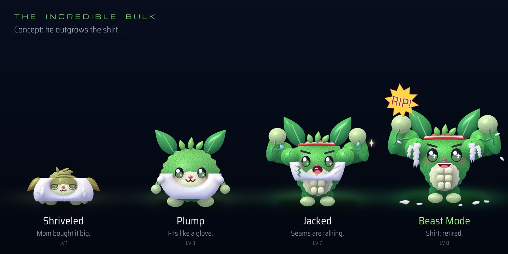
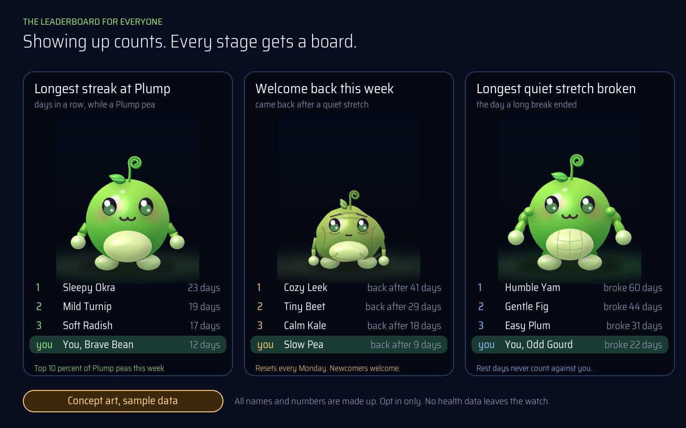
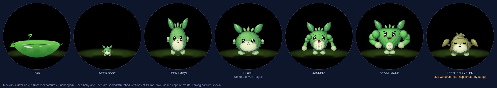

FaceGrabs / Pea-k / In development
In development
Ideas on our workbench. Some will happen, some will change, some may not.
Nothing here is a promise or comes with a date, and details will evolve. Pictures marked Concept art are sketches, not screenshots. Got an idea? Tell us on the message board or email hello@facegrabs.com.
Pea-k Performance 1.1 and beyond
On the drawing board

A data screen where a small dude gyrates around the usual stats: steps, heart rate, battery and friends. Press and hold and the big dude comes up. We like the idea. How it ends up looking is open.
Older and more watches
On the drawing board
A flatter, simpler version of him for 64-color and square screens, such as fenix 7, Forerunner 255 and 955, and Venu Sq. These screens cannot draw him the way the AMOLED ones do, so he would look different. No promise that it works out.
The Incredible Bulk
On the drawing board

He outgrows his shirt on the way to Pea-st Mode. This is a picture of the joke so far.
A leaderboard for everyone
On the drawing board

We are all on the same journey, so a leaderboard should not belong to the people who already live at the gym. This one would reward showing up, not how much you do. You would compare with peas at your own stage, the boards would reset every week so newcomers can win, and a rest day would not break your streak. It would be optional and anonymous, and it would only use a few small counts, never steps, heart rate or where you go.
- Longest streak at every stage, from Wilting to Pea-st Mode
- Welcome back: the biggest comeback of the week
- Longest quiet stretch broken, because starting again is the hard part
- Most improved compared with your own last month
- Steadiest week, for steady beats busy
- Cheers and kindness badges for the friends who lift others up
It is an idea and a design so far. Got a board you would love, or one we should leave out? Tell us on the Message board.
New outfits, trunks and gear
On the drawing board

More looks for him: other trunks, swimwear and athletic styles, unlocked by playing, kept family friendly. Pick-your-pea personalities are a second idea: a handful of varieties, such as an earnest beginner, a couch spud and a stoic powerlifter, each with their own attitude. His body still comes from your training, but his attitude might not agree with it.
A paid second model
On the drawing board
Once the free one has had a good run, a paid second model with new animations. No date, and the free one stays free.
FORGED Events
On the drawing board
FORGED reacts to your day. Events play as they are triggered, like hitting your step goal, when the scene comes alive with hammers landing and leaves its mark on the face for the rest of the day.
Glucose complication
On the drawing board
A glucose reading you can add to your watch faces as a complication, so the number is there at a glance next to the time.
Data Watch
On the drawing board
Gentle experiments with the metrics your watch already measures, worked out on the watch with published methods. We have research on what the watch can read and which measures are worth showing. One idea is personal experiments, like how you do after a rest day versus a run. Small samples can mislead, so this would show how few sessions it saw and never claim to match Garmin or give medical advice. It is a wellness-style experiment.
A free companion widget
On the drawing board
A free widget that shows graphs and trends for the face, over days and weeks, for the Data Watch idea above.
A workout buddy, across any distance
On the drawing board

A virtual workout partner. You and a friend both have the face, you link up with a short code, and you can each watch the other grow. It is a team, not a contest: each of your own easy active days adds to one shared number, so a casual buddy and a gym buddy can win together.
- Pair with a short code, both of you say yes, and unpair with one tap
- See your buddy's pea at their stage with a friendly line, like "Sam is at Plump, 4 day streak"
- One shared weekly goal that does not need equal effort
- Kind preset cheers only, with no free text and no nagging
- A small welcome back cheer when a buddy returns after a break
No strangers, no search, and only a few small counts are shared, never steps, heart rate or where you go. Ideas? Tell us on the Message board.